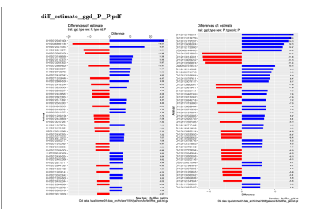
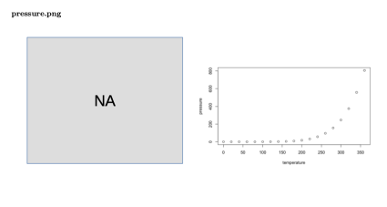
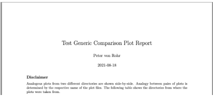

vignettes/generic_comparison_plot_report.Rmd
generic_comparison_plot_report.Rmdtl;dr. Given two directories dir1 and dir2,
containing plot files stored in pdf or png-format, the follwoing
command
qgert::create_comparison_plot_report(ps_right_dir = dir1, ps_left_dir = dir2)creates a RMarkdown report
(generic_comparison_plot_report.Rmd) in the current
directory where analogous plots from the two directories are shown
side-by-side. The RMarkdown report is automatically rendered into a pdf
document (generic_comparison_plot_report.pdf) which can
also be found in the current working directory.
Results of statistical analyses are often presented as diagrams. When we are interested in the effect of changes in the analysis on the results, they should be visible in the comparison of the result diagrams. Hence there is a need for comparing the same type of diagram for different context parameters.
Given two directories each containing a set of plot files stored
either as pdf-files or in png-format. Furthermore, we assume that the
plot files in the two directories normally come in pairs with the same
file name. The function create_comparison_plot_report()
from the qgert package takes the path to the two
directories as arguments and shows the plots which are stored in files
with the same name side-by-side in a RMarkdown report. This makes the
comparison of the two plots a lot easier.
The result of running the function
create_comparison_plot_report() is a report that shows
pairs of analogous plots side-by-side. An example of such a pair of
plots is shown below.

If any of the plot files is missing in one of the directories a placeholder directory showing the string ‘NA’ is included. This is shown below.

As shown in the summary section above, the function
create_comparison_plot_report() requires only the two
directories to be specified as input parameters. But there are more
options with which the generated report can be modified and enhanced.
The generated report is based on a template which contains placeholders
allowing to parameterize the generated report. The parametrisation
allows to insert specific characteristics of a given report into the
RMarkdown source file. These characteristics include the title, the
author and the output format of the report. The specific information is
passed as a list to the argument pl_repl_value. Hence the
following call to the function
create_comparison_plot_report() modifies the title and the
author in the report.
qgert::create_comparison_plot_report(ps_right_dir = dir1,
ps_left_dir = dir2,
pl_repl_value = list(title = "Test Generic Comparison Plot Report",
author = "Peter von Rohr")As can be seen from the following screenshot, the title and the author have been modified according to the specified input.

The following table gives a list of all available parameters for the
function create_comparison_plot_report()
| Parameter | Description |
|---|---|
| ps_right_dir | Plots shown on the right-hand-side in the report |
| ps_left_dir | Plots shown on the left-hand-side in the report |
| ps_tmpl_path | Path to alternative report template |
| ps_diagram_na_path | Path to missing diagram replacement |
| ps_report_text | Additional text to be included at the beginning of the report |
| pl_repl_value | List with placeholder replacement values |
| ps_out_path | Alternative path to report document |
| pb_keep_src | Flag to keep source files |
| pb_session_info | Flag to include session information |
| pb_force | Flag to overwrite existing report |
| pb_debug | Flag to include debugging information |
| plogger | log4r logger object |